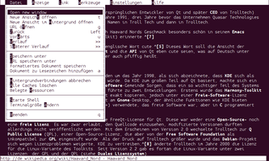
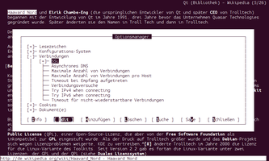

ELinks
Dieser Artikel wurde für die folgenden Ubuntu-Versionen getestet:
Ubuntu 14.04 Trusty Tahr
Zum Verständnis dieses Artikels sind folgende Seiten hilfreich:
 ELinks
ELinks  ist eine Abspaltung (Fork) des Konsolenbrowsers Links und stammt wie dieser aus Tschechien. Browser für die Kommandozeile zeichnen sich gegenüber grafischen Programmen durch ihre höhere Geschwindigkeit aus. Bei Notfällen wie dem Ausfall des XServers und damit der kompletten grafischen Oberfläche sind sie unverzichtbar, um von der Kommandozeile aus nach Lösungen, im Internet, zu suchen. Konsolenbrowser sind auch für Benutzer von Minimalsystemen eine Hilfe. Eine Besonderheit ELinks' gegenüber anderen Konsolenbrowsern ist das interaktive Benutzermenü, welches es auch auf Deutsch gibt.
ist eine Abspaltung (Fork) des Konsolenbrowsers Links und stammt wie dieser aus Tschechien. Browser für die Kommandozeile zeichnen sich gegenüber grafischen Programmen durch ihre höhere Geschwindigkeit aus. Bei Notfällen wie dem Ausfall des XServers und damit der kompletten grafischen Oberfläche sind sie unverzichtbar, um von der Kommandozeile aus nach Lösungen, im Internet, zu suchen. Konsolenbrowser sind auch für Benutzer von Minimalsystemen eine Hilfe. Eine Besonderheit ELinks' gegenüber anderen Konsolenbrowsern ist das interaktive Benutzermenü, welches es auch auf Deutsch gibt.

Neben vielen anderen beherscht ELinks folgende, wichtige Eigenschaften:
UTF-8
die Protokolle HTTP, HTTPS, FTP, SMB sowie IPv4 und IPv6
Cookies
Tabs
Darstellung von HTML-Tabellen und -Rahmen
MIME-Einstellungen
Implementierung eigener Skripte
Mausunterstützung im Terminal und auf der Konsole
Durch seinen Ursprung ist das Programm nahe mit links2 verwandt.
Installation¶
ELinks kann direkt aus den Ubuntu-Quellen installiert werden [1]. Das Paket heißt
elinks (universe)
 mit apturl
mit apturl
Paketliste zum Kopieren:
sudo apt-get install elinks
sudo aptitude install elinks
Bedienung¶
Das Programm kann im Terminal[2] über den Befehl:
elinks
gestartet werden. Oder gleich mit einer Webseite, wie z.B.;
elinks ubuntuusers.de
Tastaturbefehle¶
Eine vollständige Übersicht aller Tastaturbefehle findet man im Menü unter "Einstellungen -> keybinding manager". Dort kann man die Befehlstasten auch nach eigenen Vorstellungen anpassen. Hier folgt eine verkürzte Übersicht für den Anfang:
| Taste/n | Bedeutung | Taste/n | Bedeutung |
| Esc | Menü | G | Internetadresse (URL) eingeben |
| ↑ | aufwärts scrollen | ↓ | abwärts scrollen |
| Bild ↑ | eine Seite aufwärts blättern | Bild ↓ | eine Seite abwärts blättern |
| ← | rückwärts navigieren | → | vorwärts navigieren |
| T | neuen Tab öffnen | C | Tab schließen |
| < | vorheriger Tab | ⇧ + < | nächster Tab |
| E | Tab-Menü | ⇧ + 7 | Textsuche |
| O | Einstellungen | H | Verlauf |
| S | Lesezeichen | Q | ELinks schließen |
Navigation¶
Man gelangt auf eine Webseite, indem man G drückt und im sich öffnenden Menü die URL eintippt. Auf der Webseite angelangt, kann man in einem X-Terminal mit dem Mausrad oder den obigen Tasten scrollen. Man kann einen Link auf der Seite öffnen, in dem man ihn mit der Maus anklickt oder mit den Pfeiltasten ↑ ↓ bis zu dem Link navigiert und dort ⏎ drückt.
Downloads¶
Man wählt den Download Link an und durch ⏎ öffnet sich nun nicht eine Webseite, sondern ein Kontextmenü. Durch V wählt man das Download-Menü aus. Hier kann man den Zielpfad ändern. Man kann auch in den Einstellungen einen Download-Ordner angeben, der dann von diesem Download-Menü benutzt wird. Mit ⏎ wird der Download begonnen.
Einstellungen¶
 Die Einstellungen von ELinks können sowohl im Einstellungsmanager ( O ) wie auch in der Konfigurationsdatei ~/.elinks/elinks.conf angepasst werden.
Im Einstellungsmanager öffnet man einen Unterpunkt durch
. Der eingestellte Wert einer Einstellung kann durch
I (Info) angezeigt und durch
E (Edit) geändert werden.
Einige nützliche Einstellungen sind z.B.:
"Configuration system -> saving style -> 2"
"Document -> Downloading -> Default download directory -> [Download-Ordner hier eintragen]"
"HTML rendering -> Display frames -> 1"
"HTML rendering -> Display tables -> 1"
"User interface -> Sessions -> Homepage URI -> [Startseite hier eintragen]"
Tipps & Tricks¶
MIME-Typen¶
Es wäre doch praktisch, beim Öffnen bestimmter Dokumente auf einer Webseite automatisch ein Programm oder ein Skript ausführen zu lassen, um zum Beispiel bei einem Bild-Link das Bild gleich durch den eigenen Bildbetrachter anzeigen zu lassen, oder bei einem Video-Link gleich ein Videoprogramm zu starten.
Im Folgenden wird ein Bildbetrachter eingestellt. Dafür öffnet man zunächst mit einem Editor[3] die ~/.elinks/elinks.conf und fügt folgende Zeilen hinzu:
set mime.extension.jpg="image/jpeg" set mime.extension.jpeg="image/jpeg" set mime.extension.png="image/png" set mime.extension.gif="image/gif" set mime.extension.bmp="image/bmp" set mime.handler.image_viewer.unix.ask = 1 set mime.handler.image_viewer.unix-xwin.ask = 0 set mime.handler.image_viewer.unix.block = 1 set mime.handler.image_viewer.unix-xwin.block = 0 set mime.handler.image_viewer.unix.program = "[Bildbetrachter hier eintragen] %" set mime.handler.image_viewer.unix-xwin.program = "[Bildbetracher hier eintragen] %" set mime.type.image.jpg = "image_viewer" set mime.type.image.jpeg = "image_viewer" set mime.type.image.png = "image_viewer" set mime.type.image.gif = "image_viewer" set mime.type.image.bmp = "image_viewer"
Das % ist die ELinks-interne Anweisung, hier den gewählten Bild-Link anzufügen. Beim Anklicken eines Bild-Links in ELinks erscheint im sich öffnenden Kontextmenü gleich der eingestellte Bildbetrachter.
Weitere Informationen findet man in der Manpage elinks.conf und auf der Homepage der Entwickler .
YouTube-Videos auf der Konsole anschauen¶
Der Bildbetrachter Feh und der Medienplayer MPlayer können bei Nutzung der Framebuffer-Ausgabe auch auf einer virtuellen Konsole (tty) benutzt werden.
Um YouTube-Links in ELinks mit MPlayer zu streamen, geht man wie folgt vor.
Zunächst clive installieren. Danach wird in der .cliverc festgelegt, mit welchem Programm clive einen Stream abspielen soll:
--stream-exec="mplayer %i"
Nun geht man in ELinks Einstellungsmanager ( O ) auf den Punkt "Documents -> URI passing" und fügt mit A einen neuen Operator hinzu. Eine Bezeichnung wie "youtube" wäre passend. Danach muss dieser Operator mit E angepasst werden:
clive -s %
Abspeichern nicht vergessen (auch den Einstellungsmanager)!
Nun kann man einen in ELinks angewählten Youtube-Link mit der Option "Pass URI to external command" im Menü direkt an clive übergeben, das die Stream-Adresse ermittelt und diese an MPlayer übergibt.
 Übersicht
Übersicht- Erstellt mit Inyoka
-
 2004 – 2017 ubuntuusers.de • Einige Rechte vorbehalten
2004 – 2017 ubuntuusers.de • Einige Rechte vorbehalten
Lizenz • Kontakt • Datenschutz • Impressum • Serverstatus -
Serverhousing gespendet von